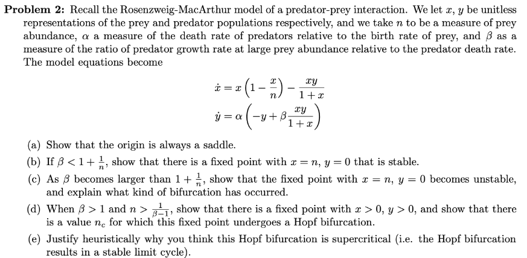
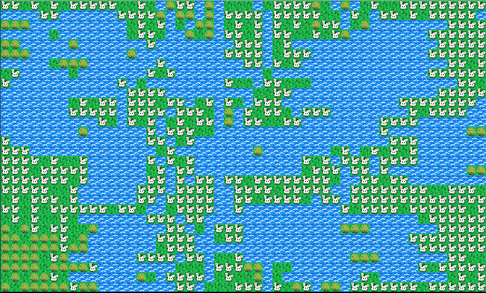
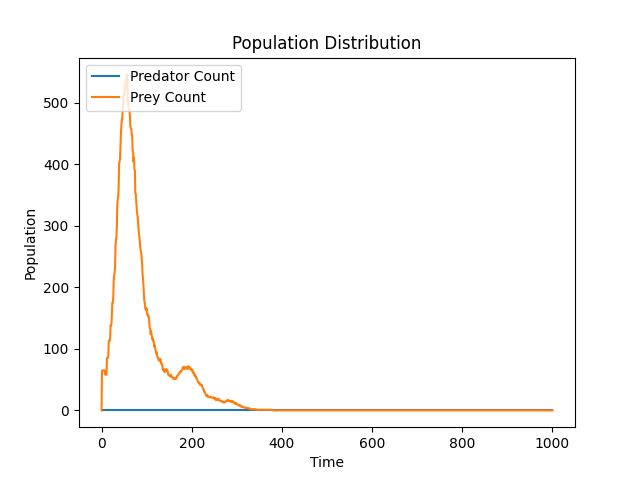

Project Lead: Karl Godard
Past Contributions: Charlotte Parent, Jonathan Sarasa, Netra Jayagopal, Adam Kuplicki, Mya Strayer, Alex Xu, Emily Teh, Debangi Mohanta, Maxcy Denmark, Noah Young, Ashley Philip
Motivation:
To create a simulation that models population dynamics in an ecosystem.
Methods:
We created this project using Python and making various classes that controlled each component of the simulation. The Action class is what defines all the possible actions an animal can make such as reproducing, drinking, moving, eating, dying. The Animal class outlines the scenarios in which all of these actions would be performed. The Prey and Predator classes are derived from the Animal class and define their respective food types, and specific interactions. The Tile class is used to search what lives in an area. Visualization class uses pygame and pixel art created by our members to visualize all the aspects of the simulation. All of these classes are used by the Map class to produce a map complete with all the ecosystem's plants, animals, and water. The class Animal Params is used as an input into the simulation class to define important variables that can be changed to get different simulations. Everything is then run by the Simulation class, which calls these classes in a loop and creates a graph that visualizes the ecosystem upon ending.
We also used the Rosenzweig MacArthur Theory of Predator-Prey interaction to model how they interact in this simulated ecosystem. 
Findings:
Parameters such as: starting distribution, hunger/thirst related behaviors, and reproduction tendencies can be tweaked in order to create a stable equilibrium.
Game Visualizations:
 